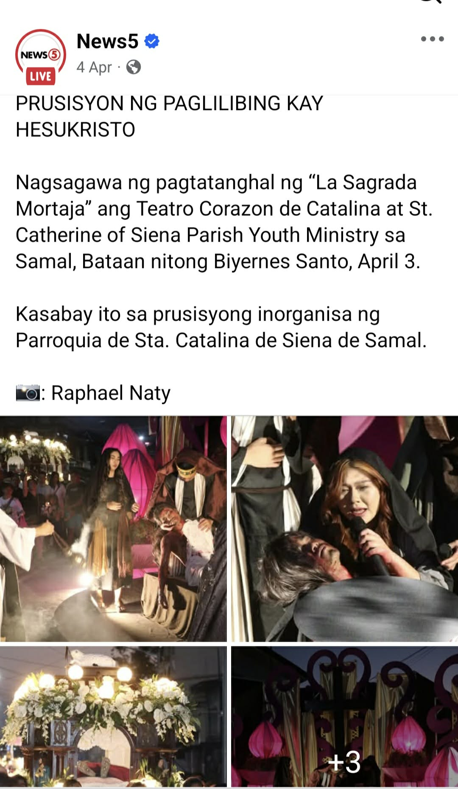
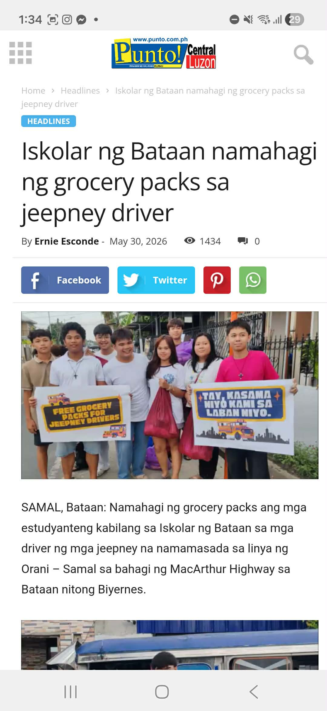
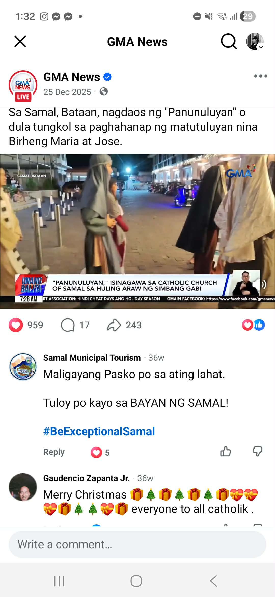
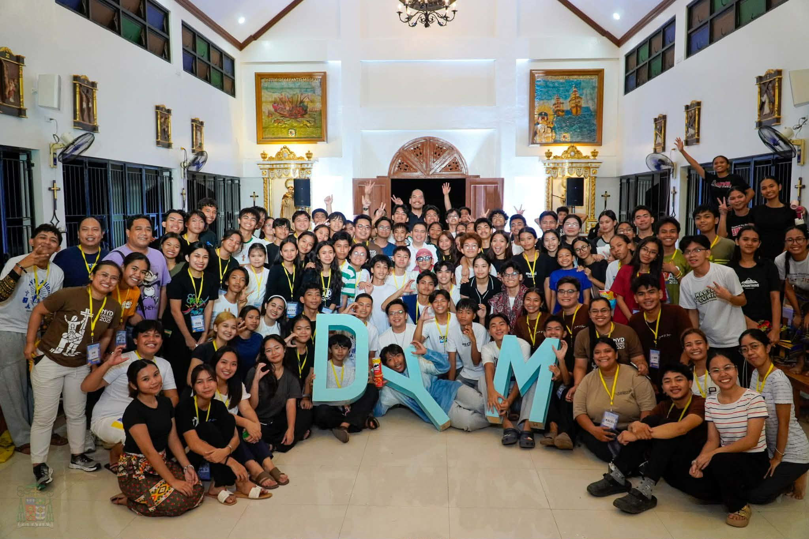
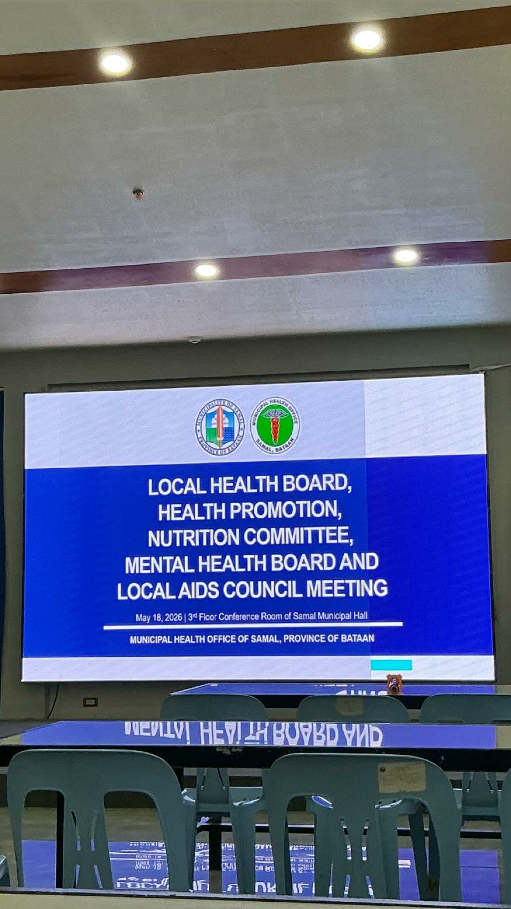
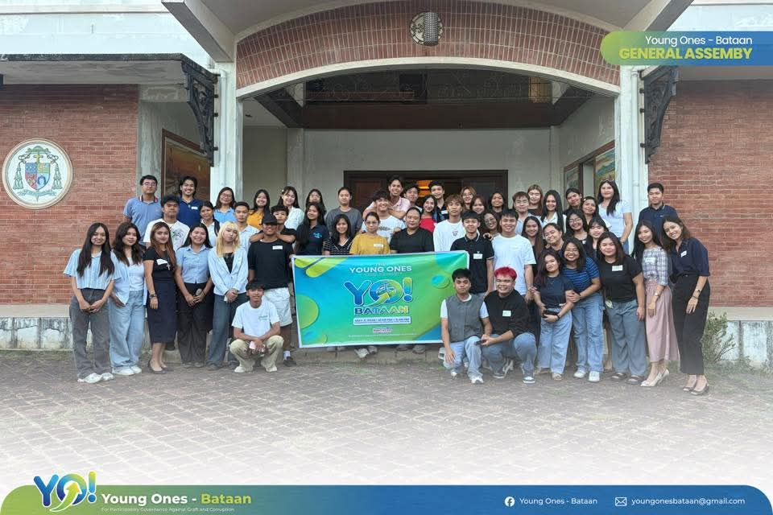
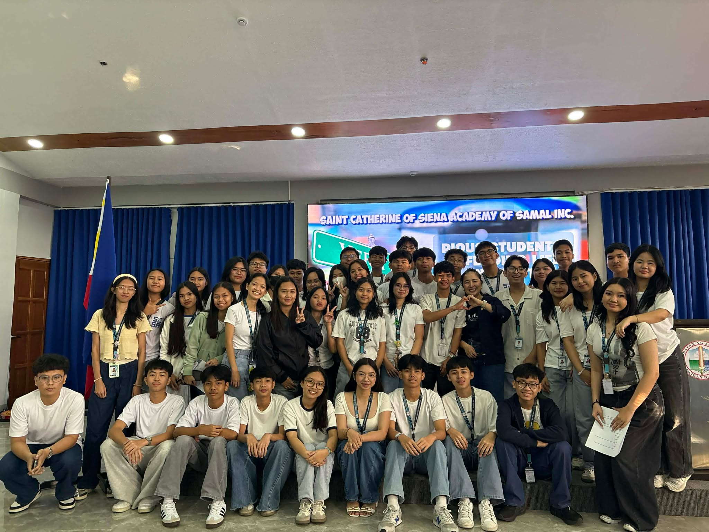
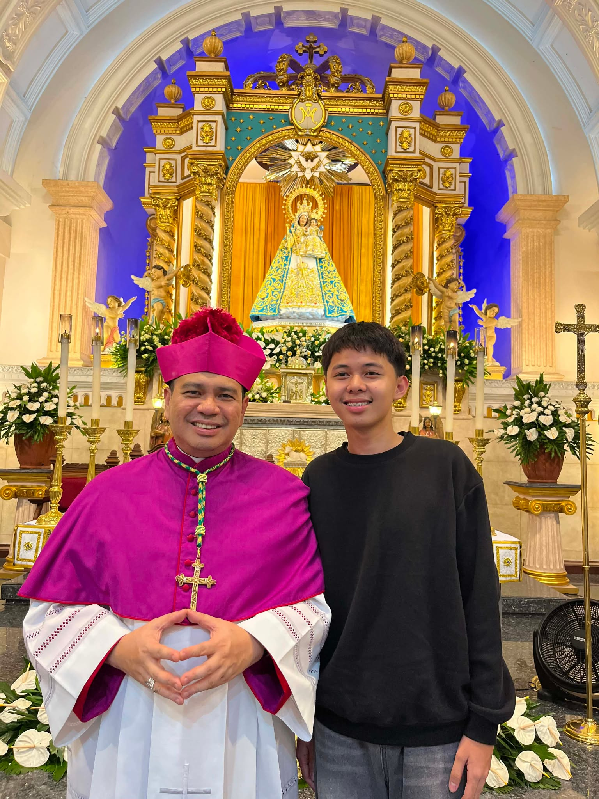
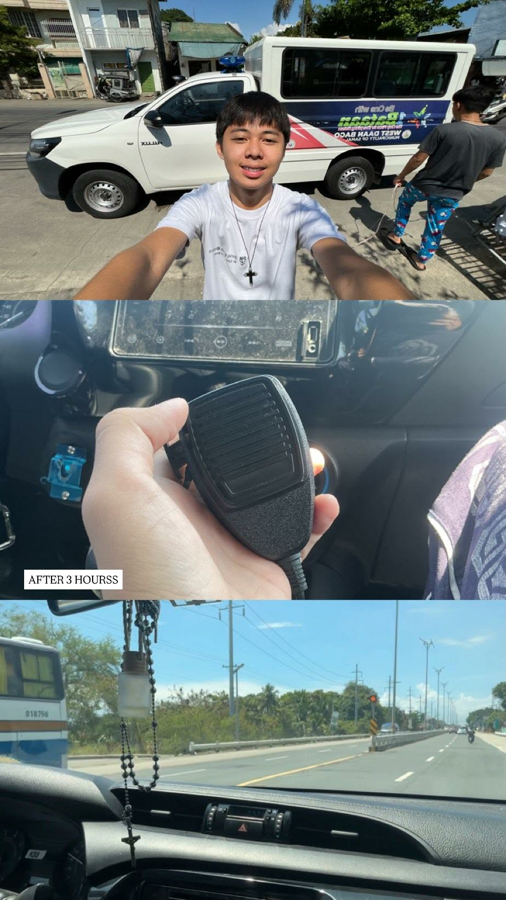

Youth Mental & Spiritual Well-Being
Creating a safe, welcoming, and prayerful environment where young people can share, reflect, and grow.
Click to learn more →TRC DYMC • WORSHIP & LITURGY
A campaign built on faith, service, and a genuine desire to help young people grow closer to God and to one another.
WHY I AM RUNNING
“Serving is not about the position or title. It is about being willing to give your time, effort, and heart to others.”
I want to run for a position in TRC DYMC because I sincerely want to continue serving my fellow youths. Through my experiences in different ministries and youth organizations, I have learned that serving is not about the position or title, but about being willing to give your time, effort, and heart to others.
I chose Worship and Liturgy because I want to help make our worship and activities more meaningful for the youth. I hope to create an environment where everyone feels welcomed, encouraged to participate, and given the opportunity to grow closer to God and to one another.
If given the opportunity to serve in TRC DYMC, I want to lead not by being above others, but by serving alongside them. I am willing to listen, learn, take responsibility, and do my part— not for recognition, but because I genuinely want to be of service.
MY PLATFORMS
These are the areas I hope to contribute to if given the opportunity to serve.
Creating a safe, welcoming, and prayerful environment where young people can share, reflect, and grow.
Click to learn more →Helping young people understand and actively participate in worship and liturgical celebrations.
Click to learn more →MY JOURNEY
Every experience, ministry, and community has helped shape how I understand faith and service.
Every experience has taught me something about faith, responsibility, and serving others.
Through church and youth activities, I have learned that even small contributions can make a difference.
I want to continue learning, serving, and growing together with the youth community.











.jpg)
ACADEMIC AWARDS
INVOLVEMENT
BEYOND THE CAMPAIGN
I believe that being part of a community means being willing to help even when there is no event or program happening.
Whether it is checking on a fellow member, helping with preparations, listening to someone, or simply being present, service can be found in everyday moments.
MY PROMISE
I may not have all the answers, but I am willing to listen, learn, and serve alongside you.
CARL HAIDEN MALLORCA Worship & Liturgy